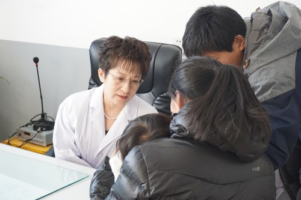

张晓艳
桂电志愿者网 日期：2017-07-20 来源：中国志愿服务网


张晓艳是中日友好医院皮肤科主任医师，北京大学医学部教授、博士生导师，北京市第十四届人大代表，是全国社区医疗服务志愿团团长和发起人。2015年，她在中华志愿者协会社会工作与志愿服务沙龙上发出倡议，号召建立一支全国性的高水平、全学科医疗专家志愿服务队伍，义务为不发达地区培训基层医生和为患者送医下乡。在她的影响和感召下，“全国社区医疗服务志愿团”迅速成立并发展成为国内规模最大、水平最高、服务基层次数最多的全国性医疗志愿服务社团。
为组织好志愿服务活动，张晓艳在日常繁重的工作之余，不辞辛劳地奔走在志愿服务第一线。在山西武乡，半天时间里为120多位患者义诊;在黑龙江宝清县，带病坚持义诊，耐心解答患者问题;在重阳节，带领志愿团前往密云鼓楼街道福利院，为孤寡老人送温暖;在建党95周年之际，带领志愿团千里奔波，赶赴陕西白河县开展大型义诊活动;在国际志愿者日，带领志愿团前往河北固安，为居民送去医疗公益的爱心温暖。
近两年来，张晓艳带领志愿团在北京、河北、山西、陕西、黑龙江、四川等地开展医疗志愿服务活动近千次，为近万名基层患者提供义诊和健康指导，为近5000名县市医院、社区和乡镇卫生院的医护人员开展疑难杂症会诊和诊疗培训等帮扶活动，用实际行动践行 “医者仁心、大爱无疆”的医疗志愿服务精神。她的事迹多次被《北京晚报》、《凤凰资讯》等媒体报道。本人先后荣获中国医药卫生事业发展基金会“德技双馨人民好医生”、“北京优秀中青年医师奖”、“北京市三八红旗奖章”等荣誉。2016年10月入选“2016北京榜样”月榜样。
【责任编辑：刘亚楠】